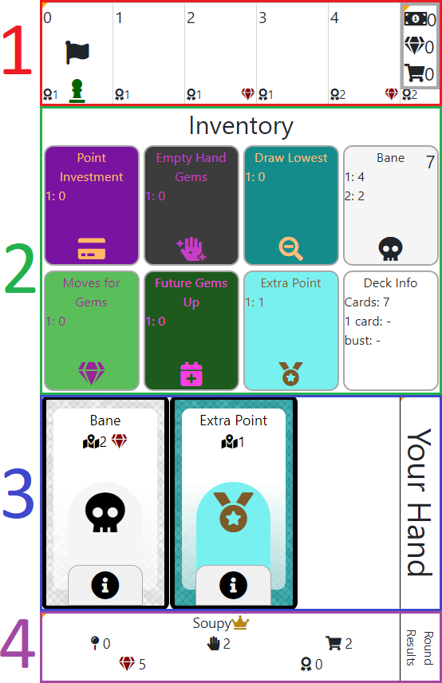

Simonionburg Rules
Game Basics
- You can play with as many people as you'd like (4-6 being optimal).
- Everybody needs their own device: phone, tablet, or computer.
- Simonionburg is a deck-building game.
Game Overview
- Object of the game is to have the most points at the end of the game.
- Each game is split into rounds. Standard Games have 10 rounds.
- Each round has two phases, Selection Phase (Play cards from your deck) and Buy Phase (Add cards to your deck).
Screen Breakdown
- The screen is split into 4 sections.
- The Board.
- The Inventory.
- Play Area.
- Scoreboard.
The Board
- Shows you how far you've progressed from playing your cards in the Selection Phase.
The Inventory
- Shows you how many of each card you have left in your deck during the Selection Phase.
- Shows how many cards you have total in your deck during the Buy Phase.
Play Area
- Where you will be doing all the interaction for the game.
- Details for each phase below.
Scoreboard
- Shows who has the most points and other various information about you and your opponents.

Selection Phase
- During this phase, the Play Area is your hand.
- Tap/Click a card in your hand to play it which moves your game piece on the board by the number indicated on the card by the .
-
At the end of the Selection Phase, you will:
- Earn points indicated on the bottom left of the board space you ended on.
- Earn money indicated by the board space number on the top left.
-
For every card that you place on a board space with a gem , you will earn a gem.
- Your goal during the Selection Phase is to move as far as you can with your cards to get the most money, points, and gems.
-
Your deck starts with many Bane cards.
- During the Selection Phase, you can only move so many spaces with Bane cards (A standard game has a threshold of 7).
-
If you play too many Bane cards, you will Bust .
- Busting will immediately end your Selection Phase.
- If you Bust you will have to chose between the points or money you've earned on the board during this Selection Phase.
- If your hand has less cards then your total hand size, you have the option of ending your turn.
- This means, if you have a full hand, you are forced to play at least one card (which may end up causing you to bust).